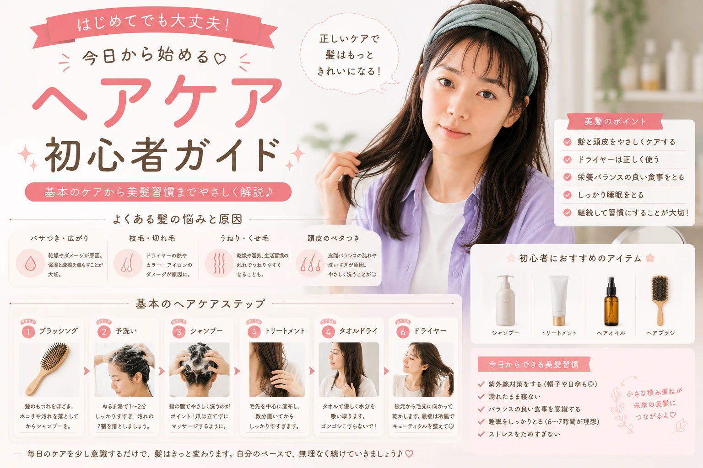

ヘアケア初心者向け完全ガイド
毎日の髪のお手入れを
もっとシンプルに。
シャンプーから
トリートメント、
ドライヤーまで、
基本のヘアケアを
わかりやすく紹介します。

ヘアケアは何から始めればいい？
髪をきれいにしたいと思っても、 「どんなシャンプーを使えばいい？」 「トリートメントは必要？」 「ドライヤーはどう使えばいい？」 と迷ってしまうことがあります。
しかし、
ヘアケアは高価なアイテムを
たくさん揃えることだけが
すべてではありません。
毎日の洗髪や乾かし方、
ブラッシングなど、
基本的なお手入れを
見直すことから始められます。

毎日の小さなお手入れからヘアケアを始めよう
最初から全部揃えなくてもOK
ヘアケア初心者は、 まず現在のヘアケア習慣を確認して、 できるところから少しずつ 見直していきましょう。
まずは自分の髪の状態をチェック
ヘアケアアイテムを選ぶ前に、
自分の髪が現在どのような状態なのかを
確認してみましょう。
髪質やダメージの感じ方、
頭皮の状態などによって、
気になるポイントは異なります。
乾燥が気になる
髪がパサついて見える、 毛先がまとまりにくいなど、 乾燥が気になる場合は 保湿感のあるアイテムなどを チェックしてみましょう。
髪が広がりやすい
湿気の多い日などに 髪がまとまりにくい場合は、 普段の乾かし方や ヘアケア方法を 見直してみましょう。
毛先が気になる
毛先のパサつきや 絡まりが気になる場合は、 毛先まで丁寧に ケアすることを意識しましょう。
頭皮が気になる
頭皮の状態が気になる場合は、 洗髪方法や使用している ヘアケアアイテムを 見直してみましょう。

髪や頭皮の状態には個人差があります。 気になる症状が続く場合や、 使用中に異常を感じた場合は、 無理に使用を続けず専門家へ相談しましょう。
シャンプーの基本を見直そう
毎日のヘアケアで
基本となるのがシャンプーです。
「髪を洗う」というと
髪そのものをゴシゴシ洗うイメージがありますが、
シャンプーでは頭皮を清潔に保つことも
意識してみましょう。

シャンプーは頭皮と髪を丁寧に洗うことを意識
シャンプー前にやっておきたいこと
ブラッシング
髪を洗う前に軽くブラッシングして、 髪の絡まりなどを整えておきます。
予洗い
シャンプーを使う前に 髪と頭皮をしっかり濡らします。
シャンプーを泡立てる
適量を手に取り、 泡立ててから 頭皮と髪を洗います。
しっかりすすぐ
シャンプーが残らないよう、 十分にすすぎます。
「強く洗う」より「丁寧に洗う」
力を入れすぎるのではなく、 自分の頭皮や髪の状態を確認しながら 丁寧に洗うことを意識しましょう。
トリートメント・コンディショナーの基本
シャンプーの後に使う
コンディショナーやトリートメントも、
毎日のヘアケアで
チェックしておきたいアイテムです。
商品によって使用方法が異なるため、
パッケージに記載されている
使用方法を確認して使いましょう。

商品の使用方法を確認して丁寧にケア
コンディショナー
髪を整えるために使う ヘアケアアイテム。 商品ごとの使用方法を 確認して使いましょう。
トリートメント
商品によって特徴や使い方が異なります。 パッケージなどの説明を確認し、 適切な方法で使用しましょう。
ヘアマスク
特別なケアとして使用する 商品もあります。 使用頻度や放置時間などは 商品説明を確認してください。
トリートメントを使うときのポイント
シャンプー後に水分を軽く切る
商品の使用方法を確認し、 必要に応じて髪の水分を軽く切ります。
毛先を中心になじませる
髪の状態を見ながら、 毛先など気になる部分を中心に なじませます。
使用方法に従ってすすぐ
放置時間やすすぎ方など、 商品に記載されている 使用方法を確認しましょう。
ヘアケア製品は商品によって 使用方法や使用量が異なります。 必ず商品の表示を確認して使用してください。
お風呂上がりの髪を正しく乾かそう
シャンプーやトリートメントだけでなく、
お風呂上がりの髪の乾かし方も
毎日のヘアケアで意識したいポイントです。
濡れた髪はそのままにせず、
タオルドライをしてから
ドライヤーで乾かしましょう。

タオルドライとドライヤーで髪を丁寧に乾かそう
お風呂上がりの基本ステップ
タオルで水分を取る
髪をタオルで包み、 強くこすらずに 水分をやさしく取ります。
毛先の水分を整える
毛先に残っている水分も タオルで軽く押さえるように 取ります。
ドライヤーで乾かす
髪と頭皮を確認しながら、 ドライヤーを使って 全体を乾かします。
濡れたまま放置しないことを習慣に
お風呂上がりは、
できるだけ髪を乾かす時間を
習慣にしましょう。
髪の状態や季節などに合わせて、
自分が続けやすい方法を
見つけることが大切です。
ドライヤーの使い方を見直そう
ドライヤーは、
髪を乾かすために
毎日使うことの多いアイテムです。
乾かすときは、
一か所だけに長時間
熱や風を当て続けないようにしながら、
髪全体をバランスよく乾かします。

ドライヤーは髪全体に風を当てながら乾かそう
ドライヤーを使うときの基本
根元から乾かす
髪全体の状態を確認しながら、 根元側から乾かしていきます。
一か所に集中させない
ドライヤーを動かしながら、 髪全体に風を当てます。
距離を意識する
ドライヤーは近づけすぎず、 商品の使用方法も確認しながら 使用しましょう。
乾かし残しをチェック
根元や髪の内側など、 乾きにくい部分も 最後に確認します。
ドライヤーは製品によって 温度や風量などの仕様が異なります。 使用前に取扱説明書や 商品の注意事項を確認してください。
自然乾燥だけに頼らないヘアケア
お風呂上がりに
「自然に乾くまで待てばいい」と
思ってしまうこともあります。
しかし、
髪が濡れた状態が長く続くため、
基本的にはタオルドライをした後に
ドライヤーを使って
乾かす習慣をつけておくとよいでしょう。

濡れた髪を長時間そのままにする
お風呂上がりに 何もしないまま長時間過ごすのではなく、 タオルドライ後に 髪を乾かす時間を作りましょう。
タオルドライ → ドライヤー
まずタオルで余分な水分を取り、 その後ドライヤーで 髪全体を乾かします。
お風呂上がりの流れを決めておく
「お風呂から出たら タオルドライ → ヘアケア → ドライヤー」 のように、 毎日の流れを決めておくと 習慣にしやすくなります。
ヘアブラシの使い方もチェック
ヘアブラシは、
髪の絡まりを整えたり、
スタイリングをするときなどに
使用するアイテムです。
ブラッシングするときは、
髪の状態を確認しながら
無理に引っ張らないように
やさしく扱いましょう。

髪の絡まりを確認しながらやさしくブラッシング
ブラッシングの基本
毛先から整える
毛先に絡まりがある場合は、 いきなり根元から引っ張らず、 毛先側から少しずつ 絡まりを整えます。
少しずつ上へ進む
毛先が整ったら、 中間部分へと少しずつ ブラシを移動させます。
強く引っ張らない
ブラシが引っかかったときは 無理に引っ張らず、 絡まりを少しずつ ほぐすことを意識します。
ブラシの種類によって 使用方法や適した髪質が異なります。 自分の髪の状態や商品の説明を確認して 使用しましょう。
朝のヘアケアで髪を整える
朝は時間が限られているため、 短時間で髪を整えられる シンプルなルーティンを 作っておくと便利です。

朝はシンプルなヘアケアから始めよう
髪の状態をチェック
寝ぐせや毛先の絡まりなど、 まず現在の髪の状態を確認します。
ブラッシング
髪の絡まりを確認しながら、 やさしくブラッシングします。
必要に応じてスタイリング
髪の状態や その日のスタイルに合わせて、 必要なヘアケア・スタイリングアイテムを 使用します。
外出前に全体をチェック
前髪や毛先、 後ろ側などを鏡で確認して 全体を整えます。
朝のケアは「やりすぎない」ことも大切
忙しい朝は、 髪の状態を確認して 必要なケアだけを行う シンプルなルーティンにすると 続けやすくなります。
夜のヘアケアルーティン
一日の終わりには、
髪を洗って清潔に整え、
きちんと乾かしてから
休むことを意識しましょう。
特に夜は、
「洗う → ケアする → 乾かす」
という基本の流れを
習慣にしておくと便利です。

シャンプー
髪と頭皮を丁寧に洗います。
トリートメント
商品の使用方法に従って ヘアケアを行います。
タオルドライ
強くこすらず、 やさしく水分を取ります。
ドライヤー
髪全体を確認しながら 乾かします。
ヘアケア製品を使用するときは、 商品ごとの使用方法や注意事項を 確認してください。
ヘアオイルの基本を知ろう
ヘアオイルは、 髪のまとまりを整えたり、 スタイリングに使用したりできる ヘアケアアイテムです。
商品によって使用方法や仕上がりが異なるため、 パッケージの説明を確認して、 自分の髪の状態や目的に合わせて 使用しましょう。

ヘアオイルは使用量を確認して取り入れよう
ヘアオイルを使うときのポイント
まず少量から試す
最初から多く使うのではなく、 商品の使用量を確認しながら 少量から調整しましょう。
毛先を中心になじませる
髪の状態を確認しながら、 毛先など気になる部分へ なじませます。
つけすぎに注意する
使用量が多すぎると 仕上がりの印象が変わる場合があります。 少しずつ調整しましょう。
「少量から調整」が初心者の基本
ヘアオイルは商品によって テクスチャーや使用量が異なります。 商品の表示を確認しながら、 自分に合う量を探してみましょう。
ヘアミルクもチェック
ヘアミルクも、 日々のヘアケアに取り入れられる アウトバス系アイテムのひとつです。
オイルとは使用感や仕上がりが異なる 商品もあるため、 自分が求める使用感を考えて 選んでみましょう。

自分の髪の状態に合わせてヘアケアアイテムを選ぼう
ヘアオイル
商品によって特徴は異なりますが、 髪のまとまりやスタイリングなどを 目的として使われることがあります。
ヘアミルク
商品によって使用感や仕上がりが異なります。 パッケージを確認して、 自分の髪に合うものを選びましょう。
「オイルとミルクのどちらが正解」 と決めつけるのではなく、 商品の特徴や使用方法を確認して 自分の目的に合わせて選びましょう。
アウトバストリートメントを取り入れる
アウトバストリートメントとは、 お風呂から出た後などに使う ヘアケアアイテムのことです。
ヘアオイルやヘアミルクなど、 商品によって種類や使い方が異なります。 使用前には必ず商品の表示を確認しましょう。

夜のアウトバスケアの流れ
タオルドライ
髪の水分をタオルで やさしく取ります。
使用するアイテムを確認
ヘアオイルやヘアミルクなど、 使用する商品の説明を確認します。
適量をなじませる
商品の使用量を守り、 髪の状態を見ながら なじませます。
ドライヤーで乾かす
アウトバスアイテムを使用した後も、 商品の使用方法を確認しながら 髪を乾かします。
自分のルーティンに無理なく取り入れる
アイテムを増やしすぎる必要はありません。 まずは自分の髪の状態や悩みに合わせて 必要なものから取り入れてみましょう。
髪のダメージが気になるときは？
カラーリングやパーマ、 ヘアアイロンなどを使用している場合、 髪の状態が気になることもあります。
まずは普段のヘアケアを振り返り、 髪を強く引っ張ったり、 無理にブラッシングしたりしないように 丁寧に扱うことを意識しましょう。

普段のヘアケア習慣から見直してみよう
洗い方
シャンプーのときに 強くこすりすぎていないか 確認してみましょう。
タオルドライ
髪を強くこすらず、 やさしく水分を取ることを 意識しましょう。
ブラッシング
絡まりがあるときは 無理に引っ張らず、 少しずつ整えます。
熱を使うアイテム
ヘアアイロンやドライヤーなどは、 商品の使用方法を確認して 適切に使用しましょう。
髪のダメージや頭皮の状態には 個人差があります。 気になる状態が続く場合や 異常を感じた場合は、 無理にセルフケアを続けず 専門家へ相談してください。
紫外線や乾燥が気になる季節のヘアケア
髪の状態は季節や環境によっても 気になり方が変わることがあります。
夏は紫外線、 冬は乾燥など、 季節ごとの環境に合わせて ヘアケア方法を見直してみましょう。

春
季節の変化を感じたら、 髪や頭皮の状態を確認しながら いつものケアを見直してみましょう。
夏
屋外で過ごす時間が長い場合は、 髪や頭皮の状態を意識して ケアしましょう。
秋
夏から秋への変化で 髪の状態が気になる場合は、 毎日のケアを確認しましょう。
冬
乾燥が気になる季節は、 ヘアケアアイテムや 使用方法を見直してみましょう。
季節ごとに髪の状態をチェック
一年を通して同じケアをするのではなく、 髪や頭皮の状態、 季節や生活環境に合わせて 無理なく調整しましょう。
ヘアケアアイテムの選び方
ヘアケア商品を選ぶときは、 「人気だから」という理由だけではなく、 自分が何を目的として使うのかを 考えてみましょう。
目的
乾燥、まとまり、 スタイリングなど、 何を目的に使うのかを 確認しましょう。
使用感
テクスチャーや 仕上がりなど、 自分が使いやすいものを 探しましょう。
使用方法
使用量や使用頻度など、 商品ごとの説明を 確認しましょう。
続けやすさ
無理なく続けられる 価格や使いやすさも 選ぶポイントです。

初心者向けヘアケアルーティン
最初からたくさんのアイテムを 揃える必要はありません。 まずは毎日の基本的な流れを 整えるところから始めましょう。
朝
髪の状態を確認して、 ブラッシングなどで 髪を整えます。
お風呂
シャンプーや トリートメントなど、 商品の使用方法に沿って ヘアケアを行います。
お風呂上がり
タオルドライをした後、 必要に応じてアウトバスアイテムを使用し、 ドライヤーで髪を乾かします。
就寝前
髪が十分に乾いているか確認し、 絡まりなどがあれば やさしく整えます。
やりがちなヘアケアNG習慣
ヘアケアは、 アイテムを増やすだけではありません。 普段何気なく行っている習慣を 一度見直してみることも大切です。
髪を強くこすって洗う
力を入れてゴシゴシ洗うのではなく、 髪や頭皮の状態を確認しながら 丁寧に洗うことを意識しましょう。
タオルで髪を強くこする
お風呂上がりは、 タオルで強くこするのではなく、 やさしく水分を取るようにしましょう。
濡れた髪を長時間放置する
タオルドライをした後は、 ドライヤーを使って 髪を乾かす習慣を作りましょう。
絡まりを無理に引っ張る
ブラシが引っかかったときは 無理に引っ張らず、 毛先から少しずつ 整えていきましょう。
ヘアケアアイテムをつけすぎる
ヘアオイルなどは 商品の使用量を確認し、 少量から調整してみましょう。
人気だけでアイテムを選ぶ
人気の商品でも、 自分の髪の状態や目的に 合うとは限りません。 使用方法や特徴を確認しましょう。

「やりすぎない」こともヘアケア
ヘアケアは、 たくさんのアイテムを使うことだけが 正解ではありません。 毎日の基本を丁寧に行うところから 始めてみましょう。
ヘアケア初心者チェックリスト
最後に、 普段のヘアケア習慣を 簡単にチェックしてみましょう。
CHECK YOUR HAIR CARE
チェックが少なかった項目から、 ひとつずつ習慣を見直してみましょう。
ヘアケア初心者のよくある疑問
ヘアケア初心者は何から始めればいい？
まずはシャンプー、 トリートメント、 タオルドライ、 ドライヤーなど、 毎日の基本的な習慣を 見直すところから始めてみましょう。
ヘアオイルは必ず使ったほうがいい？
必ず使わなければならない というものではありません。 髪の状態や目的、 商品の特徴などを確認して、 必要に応じて取り入れましょう。
ヘアオイルとヘアミルクはどちらがいい？
商品によって特徴や使用感が異なるため、 一概にどちらがよいとはいえません。 自分の目的や髪の状態、 好みの使用感を考えて選びましょう。
髪は自然乾燥でも大丈夫？
お風呂上がりは、 タオルドライをした後に ドライヤーで髪を乾かす習慣を 作っておくとよいでしょう。
高いヘアケア商品を買ったほうがいい？
高価な商品を揃えることだけが ヘアケアではありません。 まずは毎日の洗い方や乾かし方など、 基本的な習慣を見直してみましょう。
髪のダメージが気になるときは？
普段の洗髪、 タオルドライ、 ブラッシング、 ドライヤーなどの方法を 一度見直してみましょう。 気になる状態が続く場合は、 専門家への相談も検討してください。
ヘアケアは毎日の小さな習慣から

ヘアケアというと、 高価なアイテムを使ったり、 たくさんの商品を揃えたりすることを イメージするかもしれません。
でも実際には、 毎日の洗髪やトリートメント、 タオルドライ、 ドライヤー、 ブラッシングなど、 基本的な習慣を丁寧に行うことも 大切です。
洗う
髪と頭皮を丁寧に洗う。
整える
トリートメントなどで 自分に必要なケアを取り入れる。
乾かす
タオルドライ後、 ドライヤーで丁寧に乾かす。
続ける
無理なく続けられる ヘアケア習慣を作る。

少ない予算で、
最大限かわいく。
メイク・スキンケア・ヘアケアを もっと身近に。 自分に合った美容習慣を 少しずつ見つけていきましょう。
BEAUTY GUIDEをもっと見る※本記事はヘアケアに関する一般的な情報を わかりやすく紹介することを目的としています。 商品の使用方法や注意事項については、 各商品のパッケージ・公式情報などを 必ず確認してください。
※髪や頭皮の状態には個人差があります。 使用中に異常を感じた場合や、 気になる状態が続く場合は、 使用を中止し専門家へ相談してください。